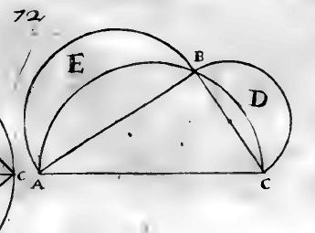

Propositio V · Theorema V¶


PROP. V. THEOR. V. (tab. 8. fig. 72)
Si in quodam semicirculo inscribatur quodlibet triangulum rectangulum; descriptis vero duobus semicirculis, quorum diametri sint latera circa angulum rectum inscripti trianguli, ita vt eorum peripheriae extra circulum cadant; quod inter conuexam, & concauam peripheriam interijcitur, spatium aequale erit inscripto triangulo.
Sit semicirculus ABC, & inscriptum triangulum rectangulum sit ABC; describantur semicirculi BCD, ABE; dico triangulum ABC duobus meniscis E, D simul sumptis aequale esse. Nam semicirculus ABC super hypothenusam AC descriptus, duobus alijs semicirculis aequalis est, dempto propterea communi spatio, reliquum triangulum ABC aequabitur composito ex duobus reliquis meniscis E, D, quod &c.